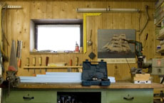

|
HEIM
Claudia Larcher | Österreich 2009 | 12 Min.
Material: HDV
Format: DigiBeta
Originalsprache: o. Dialoge
Konzept: Claudia Larcher
Kamera: Claudia Larcher
Sound Design: Claudia Larcher
Animation: Claudia Larcher
Produktion: Sixpack Films
Vertrieb: Sixpack Films
www.filmvideo.at | www.claudialarcher.com
Ein kontinuierliche Travelling durch ein Haus, vom Dachboden bis zum Keller. Ein ganzes Reservoir einer kleinbürgerlichen Provinzidylle zeigt sich, in eisiger Menschenleere abgebildet und ausgeleuchtet. Claudia Larchers Videoanimation, aus Fotos und Laufbild zu einem scheinbar unendlichen Panoramaschwenk montiert, fördert das Unheimliche im Alltäglichen zutage: eine an einem Nagel hängende Einkaufstüte, eine an der Wand lehnende Schusswaffe im Schlafzimmer, ein Telefon das klingelt. HEIM zeigt die Banalität des Bösen, das sich in perfiden Andeutungen, verschobenen Perspektiven und bizarren Montagen offenbart.
Claudia Larcher, geb. 1979 in Bregenz, Österreich. Studium an der Universität für angewandte Kunst in Wien. Seit 2005 Mitglied der Künstlergruppe "ZugZwangZukunft". Zahlreiche Ausstellungen im In- und Ausland. Lebt und arbeitet in Wien.
Filme: Everytown 2006/2007 | Nachbarn 2008 | Heim 2008
zurück
|